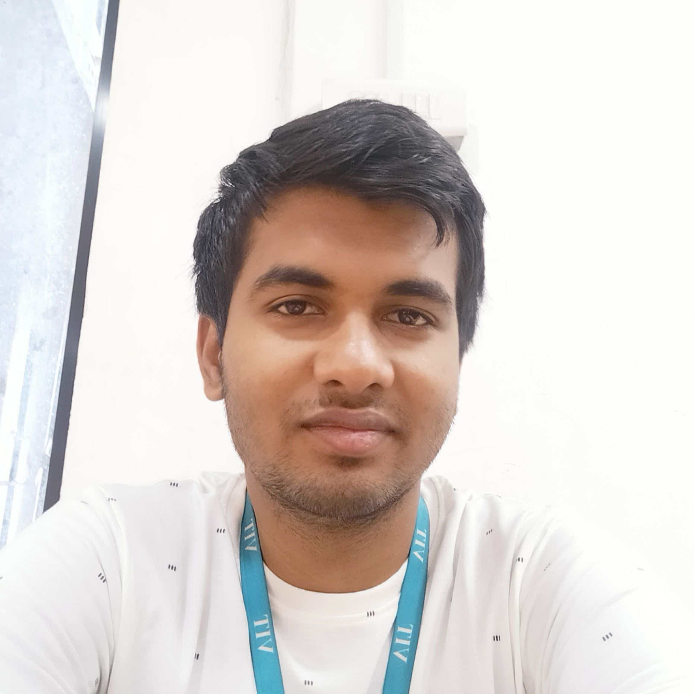

About Myself
Hello, this is Sarvesh Baskaran, a 19 year old aspiring kid from
Chennai who is currently pursuing a degree in
B.Tech Computer Science and Engineering (Specialization in Data Science) at
Vellore Institute of Technology, Vellore.
I have a lot of hobbies which vary from time to time, have a look at some
of the ones which I have been following for years are:

- Reading (Comics mostly)
- Cycling
- Working out
- Writing stories
- Watching Movies and TV Shows
- Cooking